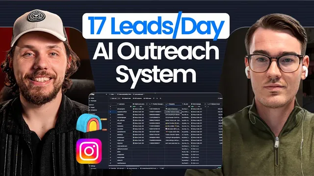

AI로 인스타 DM 하루 1,000통 보내는 법

원본 영상 보기 →
- 타깃이 안 읽는 채널을 버리고 다른 채널로 옮기면 응답률이 달라질 수 있다
- 자동화는 첫 반응을 받아내는 것까지만 맡기고, 실제 영업 대화는 사람에게 넘기는 구조가 안전하다
- AI 개인화의 품질은 확보 가능한 데이터 양에 좌우된다
한 줄 요약
크립토 거래소의 신규 트레이더 유치를 위해 이메일 대신 인스타그램 DM으로 콜드 아웃리치를 하는 실제 자동화 파이프라인(계정 워밍업 → 타겟 정리·AI 개인화 메시지 발송 → 답장 감정분석 → 긍정 답장만 걸러 담당 세일즈와 그룹채팅 자동 생성)을 인터뷰 형식으로 보여주는 영상.
전체 내용 정리
왜 이메일이 아니라 인스타그램 DM인가
이 프로젝트의 목표는 크립토 거래소로 더 많은 트레이더를 유치하는 것이다. 크립토 트레이더는 이메일을 잘 읽지 않는 편이라서, 이메일 대신 인스타그램으로 콜드 아웃리치를 하는 방식을 택했다고 설명하며 이런 접근 자체가 흔치 않다고 강조한다.
유니파일로 인스타그램 API 키를 확보하고 계정을 워밍업한다
Unipile이라는 툴로 인스타그램 API 키를 발급받아 콜드 메시지 발송을 가능하게 한다. 워밍업 중인 인스타그램 계정을 몇 개 구매해뒀다고 밝힌다. 진행자가 워밍업을 자동화 도구가 알아서 처리하는지 묻자, 아직 완전히 자동화된 단계는 아니고 계정을 2~3주 정도 존재시키면서 매일 좋아요와 스크롤 같은 활동을 사람이 직접 해주는 수동 작업 단계라고 답한다.
Clay 테이블로 타겟을 정리하고 AI가 개인화 메시지를 작성한다
Clay라는 툴에 잠재 타겟(큰 트레이더일 가능성이 있는 계정)의 사용자명을 정리해둔 테이블이 있다. 여기서 Unipile API로 각 계정의 메시징 ID를 가져오고, 다시 API를 통해 메시지를 발송한다. 메시지는 AI가 생성하는데, 계정의 바이오그래피와 팔로워 수 등으로 개인화를 시도하지만 바이오 길이가 계정마다 크게 달라서 어떤 계정은 한 단어뿐이라 개인화가 어렵고, 어떤 계정은 정보가 많아 개인화가 잘 되는 경우도 있다고 설명한다.
웹훅으로 답장을 받아 감정분석한 뒤 담당 세일즈에게 자동 인계한다
메시지에 답장이 오면 다음 Clay 테이블에 걸린 웹훅이 그 답장을 수신한다. 실제 답장 예시로 "요, 뭐가 좋아?"처럼 관심을 보이는 긍정 답장과 "지금은 나한테 안 맞는 것 같아" 같은 부정 답장을 함께 보여준다. Clay 에이전트가 이 답장이 인바운드인지 아웃바운드인지, 그리고 긍정인지 부정인지 감정분석을 한다. 긍정 답장이면 크립토 업계에서 SDR 역할을 하는 BD(비즈니스 디벨로퍼, 영업 담당자)와 함께 그룹 채팅을 자동으로 만들어서 이후 대화는 그 담당자가 이어받도록 한다. 이 팀은 후속 대화까지 직접 운영하지 않고 첫 반응을 받아내는 것까지만 자동화하며, 이는 이메일 콜드 아웃바운드 에이전시들이 흔히 쓰는 방식과 같은 구조라고 설명한다.
CRM 연동과 슬랙 알림으로 담당자 배정까지 자동화한다
받은 답장이 많을 때는 어떤 걸 보여줄지 자격 기준으로 필터링하는 단계도 있다고 언급하며, 실제로는 20건 중 일부만 시연한다. Folk라는 CRM과 연동해, 담당 BD나 SDR을 배정해야 하는 리드가 생기면 슬랙 채널로 담당자 배정을 요청하는 메시지가 온다. 담당자가 배정되면 마지막 Clay 테이블에서 배정 완료 데이터를 받아, 잠재 고객과 배정된 담당자가 함께 있는 그룹 채팅을 자동으로 만들어 고객사로의 인계를 완료한다.
핵심 인사이트
- 타깃이 안 읽는 채널을 버리고 다른 채널로 옮기면 응답률이 달라질 수 있다: 크립토 트레이더처럼 이메일을 잘 안 읽는 타깃에게는 인스타그램 DM처럼 채널 자체를 바꾸는 전략이 먹힌다.
- 자동화는 첫 반응을 받아내는 것까지만 맡기고, 실제 영업 대화는 사람에게 넘기는 구조가 안전하다: 감정분석으로 긍정 답장만 걸러 담당자에게 그룹채팅으로 인계하는 방식은 이메일 콜드 아웃바운드 에이전시들의 표준 구조와 같다.
- AI 개인화의 품질은 확보 가능한 데이터 양에 좌우된다: 계정마다 바이오그래피 길이가 크게 달라서 AI가 만드는 개인화 메시지의 품질도 그에 따라 들쭉날쭉해진다는 한계를 그대로 인정하고 보여준다.
오늘 당장 해볼 것
- 지금 쓰는 아웃리치 채널(이메일 등)의 응답률이 낮다면, 타깃 고객군이 실제로 자주 쓰는 다른 채널(인스타그램 DM, 카카오톡 등)로 옮길 수 있는지 검토해본다.
- 영업팀에 리드를 넘길 때 "누가, 언제, 어떤 기준으로" 배정받는지 슬랙 알림 같은 형태로 자동화할 수 있는지 담당자와 논의해본다.
- AI가 만드는 아웃리치 메시지의 개인화 수준이 고객 데이터 양에 따라 얼마나 들쭉날쭉한지 점검하고, 데이터가 부족한 계정은 아예 다른 방식(수동 검토 등)으로 처리하는 기준을 세워본다.